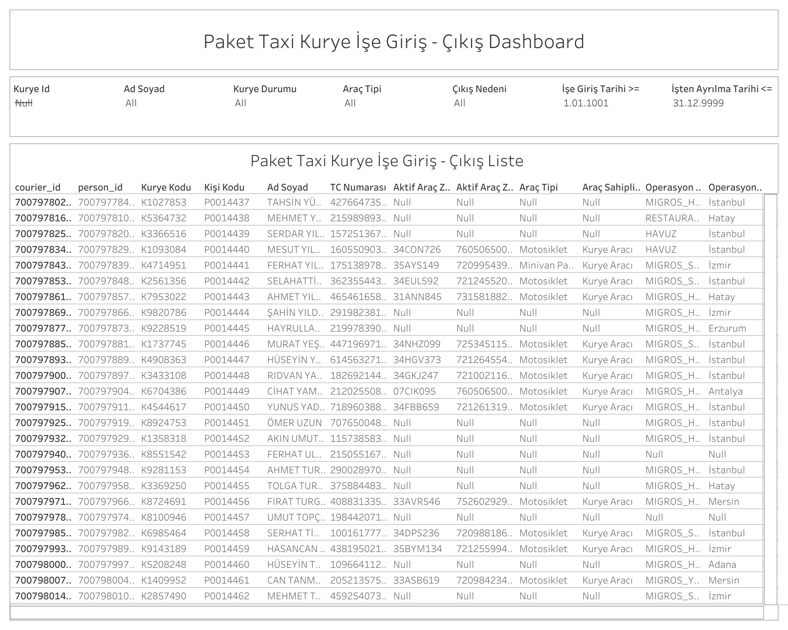

Canlı Rapora Erişin
Güncel giriş-çıkış verilerini Tableau üzerinde interaktif olarak görüntüleyin.
Dashboard Hakkında
Ne Gösterir?
PT - Kurye İşe Giriş-Çıkış Dashboard, sistemdeki tüm kuryelerin işe giriş ve ayrılma tarihlerini araç ve operasyon bilgileriyle birlikte listeler. İşe alım ve ayrılma süreçlerinin takibinde kullanılır.
- Filtreler: Kurye ID, ad soyad, kurye durumu, araç tipi, çıkış nedeni, işe giriş tarihi ve işten ayrılma tarihi
- Kurye Bilgileri: Courier ID, person ID, kurye kodu, kişi kodu, ad soyad ve TC numarası
- Araç Bilgileri: Aktif araç plakası, araç tipi ve araç sahiplik türü
- Operasyon Bilgileri: Operasyon şirketi ve operasyon şehri
- Giriş/Çıkış Tarihleri: İşe giriş tarihi ve işten ayrılma tarihini içerir; halen çalışan kuryeler için ayrılma tarihi boş görünür
Dashboard Önizleme

PT - Kurye İşe Giriş-Çıkış Dashboard — Tableau